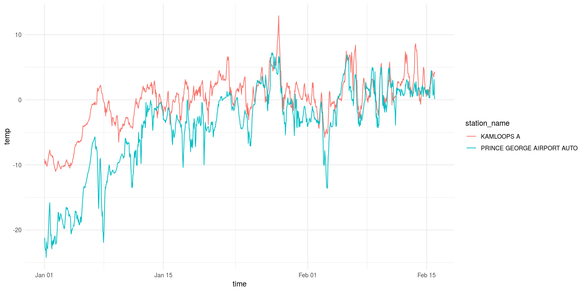

library(dplyr)
library(ggplot2)
library(weathercan)weathercan includes a data frame called stations which lists available stations and their details (including station_id.
head(stations)## # A tibble: 6 x 12
## prov station_name station_id climate_id WMO_id TC_id lat lon elev interval start
## <fct> <chr> <fct> <fct> <fct> <fct> <dbl> <dbl> <dbl> <chr> <int>
## 1 AB ABEE AGDM 32232 3010010 71285 XAF 54.3 -113. 664 day 2002
## 2 AB ABEE AGDM 32232 3010010 71285 XAF 54.3 -113. 664 hour 1990
## 3 AB ABEE AGDM 32232 3010010 71285 XAF 54.3 -113. 664 month 2002
## 4 AB ACADIA VALL… 2030 3020018 <NA> <NA> 51.2 -110. 732 day 1980
## 5 AB ACADIA VALL… 47748 3020035 71048 PAC 51.1 -110. 735 day 2009
## 6 AB ACADIA VALL… 2030 3020018 <NA> <NA> 51.2 -110. 732 hour NA
## # ... with 1 more variableYou can look through this data frame directly, or you can use the stations_search function:
stations_search("Kamloops")## # A tibble: 40 x 12
## prov station_name station_id climate_id WMO_id TC_id lat lon elev interval start
## <fct> <chr> <fct> <fct> <fct> <fct> <dbl> <dbl> <dbl> <chr> <int>
## 1 BC KAMLOOPS 1274 1163779 <NA> <NA> 50.7 -120. 379. day 1878
## 2 BC KAMLOOPS 1274 1163779 <NA> <NA> 50.7 -120. 379. month 1878
## 3 BC KAMLOOPS A 1275 1163780 71887 YKA 50.7 -120. 345. day 1951
## 4 BC KAMLOOPS A 1275 1163780 71887 YKA 50.7 -120. 345. hour 1953
## 5 BC KAMLOOPS A 1275 1163780 71887 YKA 50.7 -120. 345. month 1951
## 6 BC KAMLOOPS A 51423 1163781 71887 YKA 50.7 -120. 345. day 2013
## 7 BC KAMLOOPS A 51423 1163781 71887 YKA 50.7 -120. 345. hour 2013
## 8 BC KAMLOOPS AF… 1276 1163790 <NA> <NA> 50.7 -120. 701 day 1977
## 9 BC KAMLOOPS AF… 1276 1163790 <NA> <NA> 50.7 -120. 701 month 1977
## 10 BC KAMLOOPS AUT 42203 1163842 71741 ZKA 50.7 -120. 345 day 2006
## # ... with 30 more rows, and 1 more variableYou can narrow down your search by specifying time intervals (options are “hour”, “day”, or “month”):
stations_search("Kamloops", interval = "hour")## # A tibble: 3 x 12
## prov station_name station_id climate_id WMO_id TC_id lat lon elev interval start
## <fct> <chr> <fct> <fct> <fct> <fct> <dbl> <dbl> <dbl> <chr> <int>
## 1 BC KAMLOOPS A 1275 1163780 71887 YKA 50.7 -120. 345. hour 1953
## 2 BC KAMLOOPS A 51423 1163781 71887 YKA 50.7 -120. 345. hour 2013
## 3 BC KAMLOOPS AUT 42203 1163842 71741 ZKA 50.7 -120. 345 hour 2006
## # ... with 1 more variableYou can specify more than one interval:
stations_search("Kamloops", interval = c("hour", "month"))## # A tibble: 21 x 12
## prov station_name station_id climate_id WMO_id TC_id lat lon elev interval start
## <fct> <chr> <fct> <fct> <fct> <fct> <dbl> <dbl> <dbl> <chr> <int>
## 1 BC KAMLOOPS 1274 1163779 <NA> <NA> 50.7 -120. 379. month 1878
## 2 BC KAMLOOPS A 1275 1163780 71887 YKA 50.7 -120. 345. hour 1953
## 3 BC KAMLOOPS A 1275 1163780 71887 YKA 50.7 -120. 345. month 1951
## 4 BC KAMLOOPS A 51423 1163781 71887 YKA 50.7 -120. 345. hour 2013
## 5 BC KAMLOOPS AF… 1276 1163790 <NA> <NA> 50.7 -120. 701 month 1977
## 6 BC KAMLOOPS AUT 42203 1163842 71741 ZKA 50.7 -120. 345 hour 2006
## 7 BC KAMLOOPS AUT 42203 1163842 71741 ZKA 50.7 -120. 345 month 2006
## 8 BC KAMLOOPS CDA 1277 1163810 <NA> <NA> 50.7 -120. 345 month 1949
## 9 BC KAMLOOPS CH… 1278 1163814 <NA> <NA> 50.7 -121. 556. month 1970
## 10 BC KAMLOOPS CH… 1279 1163815 <NA> <NA> 50.6 -121. 701 month 1974
## # ... with 11 more rows, and 1 more variableYou can also search by proximity. These results include a new column distance specifying the distance in km from the coordinates:
stations_search(coords = c(50.667492, -120.329049), dist = 20, interval = "hour")## # A tibble: 3 x 13
## prov station_name station_id climate_id WMO_id TC_id lat lon elev interval start
## <fct> <chr> <fct> <fct> <fct> <fct> <dbl> <dbl> <dbl> <chr> <int>
## 1 BC KAMLOOPS A 1275 1163780 71887 YKA 50.7 -120. 345. hour 1953
## 2 BC KAMLOOPS AUT 42203 1163842 71741 ZKA 50.7 -120. 345 hour 2006
## 3 BC KAMLOOPS A 51423 1163781 71887 YKA 50.7 -120. 345. hour 2013
## # ... with 2 more variablesWe can also perform more complex searches using filter() function from the dplyr package:
BCstations <- stations %>%
filter(prov %in% c("BC")) %>%
filter(interval == "hour") %>%
filter(lat > 49 & lat < 49.5) %>%
filter(lon > -119 & lon < -116) %>%
filter(start <= 2002) %>%
filter(end >= 2016)
BCstations## # A tibble: 3 x 12
## prov station_name station_id climate_id WMO_id TC_id lat lon elev interval start
## <fct> <chr> <fct> <fct> <fct> <fct> <dbl> <dbl> <dbl> <chr> <int>
## 1 BC CRESTON CAM… 6838 114B1F0 71770 WJR 49.1 -116. 641. hour 1994
## 2 BC NELSON CS 6839 1145M29 71776 WNM 49.5 -117. 535. hour 1994
## 3 BC WARFIELD RCS 31067 1148705 71401 XWF 49.1 -118. 567. hour 2001
## # ... with 1 more variable## weather_dl() accepts numbers so we can create a vector to input into weather:
stn_vector <- BCstations$station_id
stn_vector## [1] 6838 6839 31067
## 8736 Levels: 2 3 4 5 6 7 8 9 10 11 12 13 14 15 16 17 18 19 20 21 22 23 24 25 26 27 ... 54698Searching a bleeding edge updated list of stations:
s <- stations_dl() # Download complete stations list
stations_search("Saskatoon", stn = s) # Specify the new stations list to searchOnce you have your station_id(s) you can download weather data:
kam <- weather_dl(station_ids = 51423, start = "2016-01-01", end = "2016-02-15")
kam## # A tibble: 1,104 x 35
## station_name station_id station_operator prov lat lon elev climate_id WMO_id
## * <chr> <dbl> <lgl> <fct> <dbl> <dbl> <dbl> <chr> <chr>
## 1 KAMLOOPS A 51423 NA BC 50.7 -120. 345. 1163781 71887
## 2 KAMLOOPS A 51423 NA BC 50.7 -120. 345. 1163781 71887
## 3 KAMLOOPS A 51423 NA BC 50.7 -120. 345. 1163781 71887
## 4 KAMLOOPS A 51423 NA BC 50.7 -120. 345. 1163781 71887
## 5 KAMLOOPS A 51423 NA BC 50.7 -120. 345. 1163781 71887
## 6 KAMLOOPS A 51423 NA BC 50.7 -120. 345. 1163781 71887
## 7 KAMLOOPS A 51423 NA BC 50.7 -120. 345. 1163781 71887
## 8 KAMLOOPS A 51423 NA BC 50.7 -120. 345. 1163781 71887
## 9 KAMLOOPS A 51423 NA BC 50.7 -120. 345. 1163781 71887
## 10 KAMLOOPS A 51423 NA BC 50.7 -120. 345. 1163781 71887
## # ... with 1,094 more rows, and 26 more variablesYou can also download data from multiple stations at once:
kam.pg <- weather_dl(station_ids = c(48248, 51423), start = "2016-01-01", end = "2016-02-15")
kam.pg## # A tibble: 2,208 x 35
## station_name station_id station_operator prov lat lon elev climate_id WMO_id
## * <chr> <dbl> <lgl> <fct> <dbl> <dbl> <dbl> <chr> <chr>
## 1 PRINCE GEOR… 48248 NA BC 53.9 -123. 680 1096453 71302
## 2 PRINCE GEOR… 48248 NA BC 53.9 -123. 680 1096453 71302
## 3 PRINCE GEOR… 48248 NA BC 53.9 -123. 680 1096453 71302
## 4 PRINCE GEOR… 48248 NA BC 53.9 -123. 680 1096453 71302
## 5 PRINCE GEOR… 48248 NA BC 53.9 -123. 680 1096453 71302
## 6 PRINCE GEOR… 48248 NA BC 53.9 -123. 680 1096453 71302
## 7 PRINCE GEOR… 48248 NA BC 53.9 -123. 680 1096453 71302
## 8 PRINCE GEOR… 48248 NA BC 53.9 -123. 680 1096453 71302
## 9 PRINCE GEOR… 48248 NA BC 53.9 -123. 680 1096453 71302
## 10 PRINCE GEOR… 48248 NA BC 53.9 -123. 680 1096453 71302
## # ... with 2,198 more rows, and 26 more variablesAnd plot it:
ggplot(data = kam.pg, aes(x = time, y = temp, group = station_name, colour = station_name)) +
theme(legend.position = "top") +
geom_line() +
theme_minimal()
Or you can use the vector created above:
stn_vec_df <- weather_dl(station_ids = stn_vector, start = "2016-01-01", end = "2016-02-15")
stn_vec_df## # A tibble: 3,312 x 35
## station_name station_id station_operator prov lat lon elev climate_id WMO_id
## * <chr> <chr> <lgl> <fct> <dbl> <dbl> <dbl> <chr> <chr>
## 1 CRESTON CAM… 6838 NA BC 49.1 -116. 641. 114B1F0 71770
## 2 CRESTON CAM… 6838 NA BC 49.1 -116. 641. 114B1F0 71770
## 3 CRESTON CAM… 6838 NA BC 49.1 -116. 641. 114B1F0 71770
## 4 CRESTON CAM… 6838 NA BC 49.1 -116. 641. 114B1F0 71770
## 5 CRESTON CAM… 6838 NA BC 49.1 -116. 641. 114B1F0 71770
## 6 CRESTON CAM… 6838 NA BC 49.1 -116. 641. 114B1F0 71770
## 7 CRESTON CAM… 6838 NA BC 49.1 -116. 641. 114B1F0 71770
## 8 CRESTON CAM… 6838 NA BC 49.1 -116. 641. 114B1F0 71770
## 9 CRESTON CAM… 6838 NA BC 49.1 -116. 641. 114B1F0 71770
## 10 CRESTON CAM… 6838 NA BC 49.1 -116. 641. 114B1F0 71770
## # ... with 3,302 more rows, and 26 more variablesFor more information on the data flags, see the Flags vignette, for more information on units and terms, see the Terms and Units vignette.